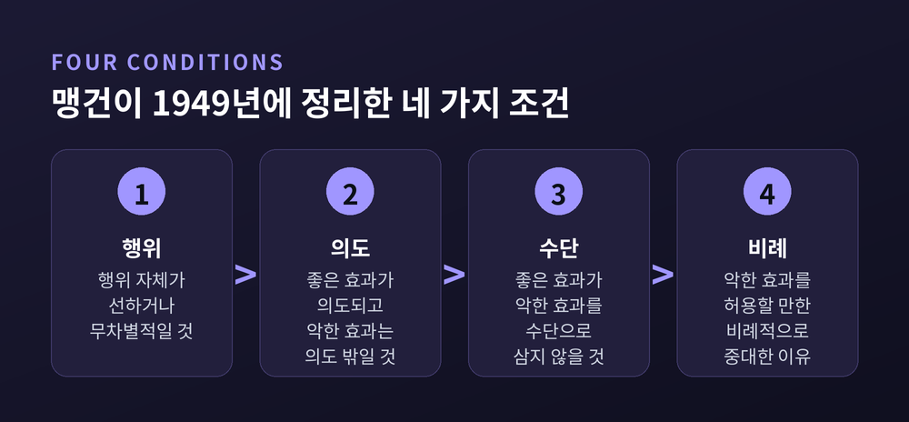

이번 글에서는 이중효과 원리와 트롤리 문제를 함께 정리해 보겠습니다. 13세기 정당방위 논의에서 나온 원리가 어떻게 20세기 낙태 논쟁으로, 다시 자율주행차 알고리즘으로 옮겨갔는지 따라가려 합니다.
세 줄 요약
폭주하는 전차가 다섯 사람을 향해 달립니다. 스위치를 돌리면 전차는 다른 선로로 들어가고, 거기서 작업하던 한 사람이 죽습니다. 돌리시겠습니까.
이번에는 육교 위입니다. 옆에 덩치 큰 사람이 서 있습니다. 그를 밀어 떨어뜨리면 그 몸이 전차를 멈추고 다섯이 삽니다. 미시겠습니까.
산수는 같습니다. 하나와 다섯입니다. 그런데 대답은 정반대로 갈립니다.
수치도 남아 있습니다. 하우저와 커시먼을 비롯한 연구진이 2007년 인터넷 기반 도덕감각검사 자료를 분석한 결과, 응답자 2,646명 가운데 스위치 사례를 허용된다고 본 사람은 89%였습니다. 반면 육교 사례를 허용된다고 본 사람은 11%에 그쳤습니다.
여기서 물음이 생깁니다. 무엇이 이 차이를 만드는가.
가장 오래된 대답은 13세기에 있습니다.
토마스 아퀴나스는 『신학대전』 제2부의 제2부 제64문 제7항에서 정당방위를 다룹니다. 물음은 "사람을 정당방위로 죽이는 것이 합법인가"입니다.
아우구스티누스는 앞서 이를 허용하지 않았습니다. 사적 정당방위는 어느 정도의 무질서한 자기애에서만 나올 수 있다고 보았기 때문입니다.
아퀴나스는 다르게 씁니다. "한 행위가 두 효과를 갖되 그중 하나만이 의도되고 다른 하나는 의도 밖에 있는 것을 막을 것은 아무것도 없다." 정당방위 행위의 두 효과는 자기 생명의 보존과 공격자의 살해입니다. 앞의 것이 의도되고 뒤의 것은 의도 밖에 있습니다.
여기에 곧바로 단서가 붙습니다. 좋은 의도에서 나왔더라도 목적에 비해 과도하면 불법이 됩니다. 필요 이상의 폭력을 쓰면 불법이고, 절제로써 힘을 물리치면 합법입니다.
비례성이라는 조건이 이미 여기 있습니다.
다만 아퀴나스 자신은 '이중효과 원리'라는 이름을 쓰지 않았습니다. 명칭과 조건 목록은 후대 가톨릭 결의론 전통이 정리한 것입니다.
가장 널리 인용되는 정식화는 1949년 조지프 맹건의 것입니다. 네 조건이 동시에 충족되어야 합니다.
『새 가톨릭 백과사전』 판본은 세 번째 조건을 인과 순서로 설명합니다. 좋은 효과가 나쁜 효과에 의해 산출되어서는 안 된다는 것입니다. 그렇지 않으면 나쁜 수단으로 좋은 목적을 추구하는 셈이 되고, 이는 결코 허용되지 않습니다.
여기에 다섯 번째를 덧붙이려는 흐름이 있습니다. 마이클 왈저는 1977년 『정의로운 전쟁과 부정의한 전쟁』에서, 부수효과로 해악을 야기하는 행위자는 그 해악을 줄이기 위해 추가 위험을 감수하거나 이익 일부를 포기할 의사가 있어야 한다고 논했습니다.
이 대목은 자주 잊힙니다. "의도하지 않았다"는 말만으로는 아무것도 정당화되지 않습니다. 스탠퍼드 철학백과가 첫 번째 오해로 꼽는 것이 바로 이것입니다. 신장결석 통증을 치사량 모르핀으로 치료하는 일을 "예견했을 뿐 의도하지 않았다"로 변호할 수는 없습니다.

여기서 흔한 오해를 하나 풀어야 합니다.
트롤리 사례를 처음 쓴 사람은 필리파 풋입니다. 1967년 『옥스퍼드 리뷰』 5호에 실린 논문 「낙태 문제와 이중효과 원리」입니다.
제목이 말해 주듯 맥락은 낙태 논쟁이었습니다. 풋의 첫 문장은 이렇게 시작합니다. 우리가 낙태 문제에 당혹감을 느끼는 이유 중 하나는, 태아에게 성인과 아동의 권리를 인정하고 싶으면서도 인정하고 싶지 않기 때문이라고요. 그는 '평등한 권리' 쟁점을 떼어내려고 성인이 등장하는 평행 사례들을 세웁니다.
그중 하나가 전차입니다. 원문에서 그것은 구경꾼이 아니라 기사입니다. 폭주하는 전차의 기사가 좁은 선로 하나에서 다른 선로로만 조향할 수 있고, 한쪽에는 다섯이 다른 쪽에는 한 사람이 작업 중입니다.
풋은 이를 판사 사례와 나란히 놓습니다. 폭도가 다섯 명을 인질로 잡고 범인을 내놓으라 요구합니다. 진범은 모릅니다. 판사는 무고한 사람을 범인으로 조작해 처형해야만 유혈을 막습니다.
풋의 물음은 단순합니다. 왜 우리는 주저 없이 기사가 덜 붐비는 선로로 가야 한다고 말하면서, 판사의 조작에는 경악하는가.
그런데 풋의 결론이 중요합니다. 그는 이중효과 원리를 채택하지 않고 대체합니다.
풋이 든 반례가 있습니다. 병원에서 다섯을 살릴 기체를 제조하면 옮길 수 없는 다른 환자의 방으로 치명적 연기가 불가피하게 샙니다. 그 환자의 죽음은 누가 봐도 부수효과이고 직접 의도되지 않습니다. 그런데도 우리는 이를 허용하지 않습니다. 유족이 병원을 상대로 소송하면 이길 것입니다.
그래서 풋이 내놓은 대안은 소극적 의무와 적극적 의무의 구분이었습니다. 우리 도덕 체계에는 사람들에게 도움의 형태로 지는 것과 불간섭의 형태로 지는 것 사이의 구분이 짜여 들어가 있다는 것입니다.
기사는 소극적 의무끼리 충돌합니다. 다섯을 다치게 하지 않을 의무와 한 명을 다치게 하지 않을 의무입니다. 이때는 최소한의 위해를 택합니다. 판사는 다릅니다. 위해 금지 의무와 도움 제공 의무를 저울질하는데, 도움 의무가 일반적으로 더 가볍습니다.
논문의 마지막 판정은 이렇습니다. 직접 의도와 간접 의도의 구분은 부수적 역할만 하고, 위해 회피와 도움 제공의 구분이 훨씬 중요하다.
트롤리는 이중효과 원리의 증거가 아니라 반증으로 태어난 셈입니다.
'트롤리 문제'라는 이름은 주디스 자비스 톰슨의 것입니다.
톰슨은 1976년 『모니스트』 논문에서 기사를 승객으로 바꿉니다. 1985년 『예일 로 저널』 논문에서는 구경꾼으로 바꿉니다. 기사는 어차피 다섯을 죽이게 되지만, 구경꾼은 가만히 있으면 죽게 두는 것일 뿐입니다. 이 교체로 문제의 성격이 달라집니다.
이름의 유래도 본인이 밝혀 두었습니다. 대서양 이쪽에서는 트램이 트롤리이므로 트롤리 문제라 불렀고, 그편이 '트램 문제'보다 듣기 좋았다고요.
톰슨이 세운 대비는 이렇습니다. 육교 사례와 구경꾼 사례에서 행위자는 똑같이 가만히 있어 다섯을 죽게 둘 수 있고, 똑같이 행동하면 한 명을 죽입니다. 그런데 왜 한쪽만 허용되는가. 톰슨은 "우리가 가진 어떤 것도 이 차이를 설명하기 시작조차 못한다"고 썼습니다.
그리고 2008년, 「트롤리를 돌리며」에서 톰슨은 자기 입장을 뒤집습니다.
계기는 MIT 대학원생 알렉산더 프리드먼의 2002년 학위논문이었습니다. 그는 제시된 해법들을 검토한 끝에 어느 것도 작동하지 않음을 보이고, 애초에 전제가 틀렸다고 결론지었습니다. 트롤리 문제는 "매우 흥미롭고 도발적이며 눈을 뜨게 하는 비(非)문제"라는 것입니다.
톰슨의 새 논증은 선택지를 하나 더 놓는 데서 나옵니다. 스위치를 오른쪽으로 돌리면 한 사람이 죽고, 왼쪽으로 돌리면 구경꾼 자신이 죽습니다.
이때 구경꾼이 "나는 오늘 죽고 싶지 않으니 오른쪽으로 돌리겠다"고 한다면 어떻습니까. 톰슨의 반문은 날카롭습니다. 스위치를 자기 쪽으로 돌릴 수 있는데, 어떻게 감히 저 인부 쪽으로 돌린단 말인가.
톰슨이 붙인 비유가 인상적입니다. 나는 옥스팜에 기부하고 싶지만 내 돈을 내기는 싫어서 남의 돈을 훔쳐 보냅니다. 꽤 나쁜 짓입니다. 그런데 구경꾼의 경우 그 비용은 돈이 아니라 목숨입니다.
원래의 두 선택지 사례로 돌아가면 결론이 나옵니다. 스위치가 자기 쪽으로는 돌아가지 않는다는 사실을 확인하고 "다행이다, 그러니 오른쪽으로 돌려도 된다"고 여기는 사람은, 스스로 비용을 낼 수 있었어도 내지 않았을 사람입니다. 그런 사람이 남에게 그 비용을 물릴 자격을 점잖게 주장할 수는 없습니다.
톰슨의 최종 판정은 이렇습니다. 구경꾼은 육교에서 사람을 미는 것보다 조금도 더 자유롭지 않다.
물론 반론이 곧바로 따라붙었습니다. 윌리엄 피츠패트릭이 2009년 『애널리시스』에 실은 「트롤리에서의 톰슨의 선회」가 대표적입니다. 이 논쟁은 아직 닫히지 않았습니다.
철학이 답을 못 찾는 동안, 심리학이 다른 질문을 던졌습니다. 왜 사람들은 이렇게 판단하는가.
조슈아 그린과 동료들이 2001년 『사이언스』에 실은 fMRI 연구가 출발점입니다. 각 실험 아홉 명의 참가자가 60개의 딜레마에 뇌 촬영 중 응답했습니다. 딜레마는 두 코더가 '개인적'과 '비개인적'으로 나눴습니다. 기준의 하나는 위해가 기존 위협을 다른 당사자에게 편향시킨 결과인지 여부였습니다.
결과는 두 갈래였습니다. 정서와 연관된 영역이 개인적 조건에서 더 활성화되고, 작업기억과 연관된 영역은 덜 활성화되었습니다.
반응시간 데이터가 더 흥미롭습니다. 개인적 딜레마에서 "적절하다"고 답한 경우, 즉 정서와 어긋나는 응답을 한 경우의 반응시간이 유의하게 길었습니다. 밀어도 된다고 답한 사람은 자기 안의 저항을 넘어서느라 시간을 더 쓴 셈입니다.
여기서 조심해야 할 대목이 있습니다. 저자들 스스로 못을 박아 두었습니다. 우리의 결론은 처방적이 아니라 기술적이며, 어떤 행위나 판단이 도덕적으로 옳거나 그름을 보였다고 주장하지 않는다고요. '개인적/비개인적' 구분도 "유용한 첫 절단일 뿐 결정적이지 않다"고 밝혔습니다.
표본이 각 실험 아홉 명이었다는 점도 함께 기억할 만합니다.
반대 방향의 증거도 있습니다. 『판단과 의사결정』에 실린 연구들은 트롤리 판단이 제시 맥락과 문화권, 그리고 실제 상황인지 가설 상황인지에 따라 달라진다고 보고합니다. 직관이 보편적이라는 주장은 그 자체로 논쟁 중입니다.
이중효과 원리를 향한 비판은 결과주의 진영에서만 나오지 않습니다. 오히려 의도의 도덕적 중요성을 인정하는 쪽에서 더 날카로운 문제 제기가 나왔습니다.
첫째, 근접성 문제입니다. 수단에 너무 가까워서 사실상 수단의 일부로 보이는 해악과, 유감스럽게 예견된 부수효과를 어떻게 가릅니까. 임신부의 자궁적출술과 낙태를 두고 한쪽은 두 경우 모두 부수효과라 하고, 다른 쪽은 두 경우 모두 수단이라 합니다. 스탠퍼드 철학백과의 평가는 담담합니다. 명확한 해결책은 나오지 않았다.
풋도 1967년에 같은 문제를 던졌습니다. 동굴 입구에 낀 사람을 다이너마이트로 폭파하며 "죽이려던 게 아니라 잘게 부수려 했을 뿐"이라 말한다면 어떻게 되는가. 그는 이를 이중효과 원리의 어떤 판본이 얼마나 우스꽝스러울 수 있는지 보이려고 끌어왔습니다.
둘째, 부작용 효과입니다. 조슈아 노브의 연구는 우리가 결과를 '의도된 것'으로 볼지 '부수효과'로 볼지가 규범적 판단에 영향받는다는 점을 보였습니다. 승인하지 않는 결과일수록 "의도적이었다"고 말하게 됩니다. 그렇다면 의도와 예견의 구분은 평가에 앞서는 중립적 기준이 되지 못합니다. 행위를 기술하는 방식을 안내할 뿐, 행위를 평가하는 지침은 아닐 수 있습니다.
셋째, 자기희생 사례입니다. 워런 퀸은 이 원리를 직접 행위주체성과 간접 행위주체성의 구분으로 다시 씁니다. 그런데 셸리 케이건이 지적하듯, 수류탄 위로 몸을 던지는 병사를 누군가가 떠밀었다면 우리는 분명 그 해악이 의도됐다고 말할 것입니다. 그렇다면 병사 본인의 경우에도 자기 죽음은 목적이 아니라 수단으로 의도된 것 아닙니까.
넷째, 더 근본적인 의심입니다. 스캔런과 매카시는 의도가 행위의 허용가능성 자체를 바꾸지는 않는다고 봅니다. 행위자가 해악을 의도했다는 사실은 그 행위를 불허하게 만들지 않지만, 그 행위자의 숙고 방식에 무엇이 잘못됐는지는 설명해 줍니다.
여기에 더 큰 물음이 겹칩니다. 이중효과 원리는 정말 하나의 원리입니까, 아니면 살인 금지에 대한 느슨한 예외 목록에 이름 하나를 붙인 것입니까. 비례성 조건이 모호하고 지나치게 일반적이어서, 실질적 정당화는 다른 원리들이 다 하고 있다는 지적이 있습니다.
추상적으로 보이는 이 구분은 실제로는 매우 구체적인 곳에서 작동합니다.
전쟁윤리. 군사 목표를 겨냥하며 민간인 사망을 예견하는 전술 폭격과, 적의 의지를 꺾으려 민간인을 겨냥하는 공포 폭격의 대비는 가장 덜 논쟁적인 사례 쌍으로 여겨져 왔습니다. 그러나 스탠퍼드 철학백과는 이를 정면으로 문제 삼습니다. 국제적십자위원회의 국제인도법 관습규칙은 민간인 표적 공격을 금지할 뿐 아니라, 규칙 15에서 실행 가능한 모든 예방조치를, 규칙 20에서 효과적인 사전 경고를 요구합니다. 백과의 판정은 이렇습니다. 철학자들이 그토록 자주 원용하는 전술 폭격 사례는 민간인에게 경고하거나 이동시킬 의무를 결코 언급하지 않는다.
완화의료. 말기 환자에게 오피오이드를 투여해 죽음이 앞당겨지는 것을 감수한다는 논변은 이중효과의 교과서적 적용으로 통해 왔습니다. 그런데 그 전제가 흔들립니다. 수전 앤더슨 포어는 1998년 논문에서, 적절히 사용될 때 오피오이드에 의한 호흡 억제는 드문 부작용이라는 폭넓은 합의가 있으며 이 쟁점에 전문가들 사이의 논쟁은 없다고 정리했습니다. 잘못된 믿음이 오히려 통증의 과소치료를 낳는다는 지적도 함께 나옵니다. 1997년 미국 연방대법원 배코 대 퀼 판결이 이중효과를 원용하자, 퀼과 드레서와 브록은 같은 해 『뉴잉글랜드 저널 오브 메디슨』에서 반박했습니다. 말기 진정은 불가피하게 죽음을 야기하므로 이중효과 규칙 아래서는 오히려 허용되지 않는다는 것입니다.
자율주행차. 이 문제가 다시 뜨거워진 것은 알고리즘 때문입니다. 2018년 『네이처』에 실린 모럴 머신 실험은 233개 국가·지역에서 4천만 건의 결정을 모았고, 문화권에 따라 세 개의 국가 군집이 나타났다고 보고했습니다.
예전에는 트롤리가 강의실의 사고 실험이었습니다. 지금은 코드에 적힐 규칙의 문제가 되었습니다.
흥미로운 것은 규범 쪽의 방향이 반대라는 점입니다. 독일 연방교통인프라부 윤리위원회가 2017년 내놓은 자동·연결 주행 윤리 강령의 가이드라인 9는, 불가피한 사고에서 연령·성별·신체적·정신적 상태 같은 개인적 특징에 따른 구별을 엄격히 금지하고 피해자를 서로 상계하는 것도 금지합니다. "다섯 대신 하나"라는 계산 자체를 규범에서 배제한 것입니다. 다만 이 조항은 2021년 독일 자율주행법에 온전히 반영되지는 않았습니다.
스탠퍼드 철학백과가 던지는 반문도 남습니다. 더 큰 인명 손실을 막기 위해 언제나 탑승자를 희생하는 자율주행차를 누가 사겠습니까.
끝으로 한 마디만 더 드리겠습니다.
이 논쟁에서 어느 한쪽 손을 들어드리기는 어렵습니다. 트롤리를 돌려도 된다는 입장과 돌려서는 안 된다는 입장이 팽팽하고, 톰슨처럼 한평생 이 문제를 붙들고도 자기 답을 뒤집은 사람이 있습니다. 스탠퍼드 철학백과조차 세 갈래 입장을 나란히 적어 둘 뿐입니다.
다만 이 원리가 무엇을 하지 않는지는 분명해 보입니다. 이중효과 원리는 면죄부가 아닙니다. 비례성 조건과 해악 최소화 요구를 떼어내고 "의도하지 않았다"만 남기면, 그것은 원리가 아니라 변명이 됩니다.
"의도하지 않았다는 말은 정당화의 시작일 뿐, 결코 그 끝이 아닙니다."
의도한 해악과 예견된 해악이 도덕적으로 다르냐고 물으신다면, 다르게 느껴지는 것은 분명하지만 왜 다른지는 아직 아무도 만족스럽게 말하지 못했다고 답하겠습니다.